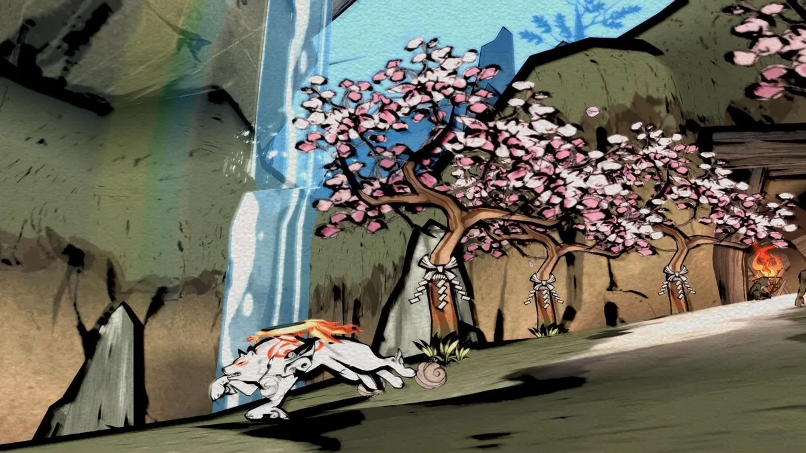
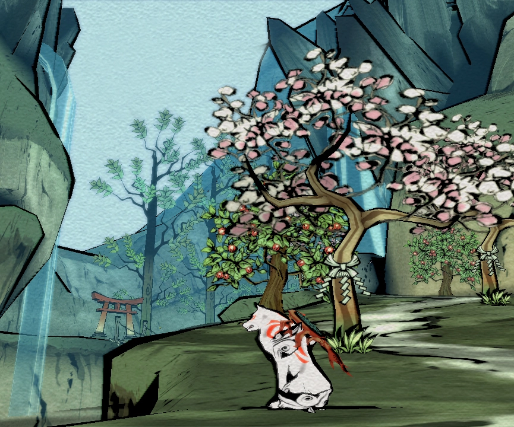
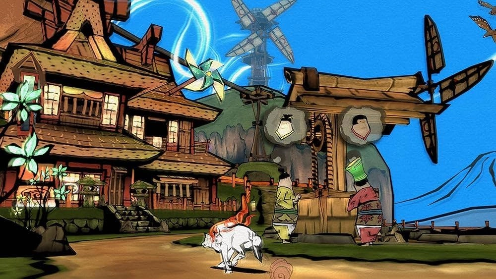

TÉCNICA DE ANIMACIÓN
Una característica distintiva de Okami es su estilo visual animado con la técnica cel shading, reminiscente de una acuarela japonesa.
CEL SHADING
Es un tipo de renderización no fotorrealista diseñada para hacer que los gráficos por computadora parezcan dibujados a mano. Las sombras planas se usan comúnmente para imitar el estilo de los cómics o dibujos animados , común de verse en videojuegos de consolas. Si bien el resultado del sombreado plano puede aparentar ser simplista como el de una animación dibujada a mano, es un proceso complejo.
PROCESO
El proceso de Cel Shading implica varios pasos clave:
- Renderizado 3D: Se renderiza la escena 3D con un sombreado plano, lo que crea un aspecto de “célula” o “comic”.
- Detección de Bordes: Se detectan los bordes de los objetos y personajes, lo que permite aplicar contornos negros precisos.
- Aplicación de Contornos: Se aplican contornos negros alrededor de los objetos y personajes, lo que define su forma y estructura.
- Aplicación de Colores: Se aplican colores planos y uniformes a los objetos y personajes, lo que crea un aspecto de “pintura” o “ilustración”.
ESTILO VISUAL
El estilo visual de Okami se basa en una técnica de pintura japonesa llamada sumi-e (pintura de tinta), que se combina con el estilo de animación cel-shading. Este estilo, inspirado en acuarelas y grabados japoneses como los de Hokusai, busca dar al juego la apariencia de una ilustración animada en tinta. El arte sumi-e se caracteriza por trazos simples pero expresivos, que capturan la esencia de los objetos y el movimiento, un concepto que se integra en el gameplay con la mecánica del Pincel Celestial.
Inspiración en el arte japonés: El diseño visual del juego busca plasmar el “espíritu” de la cultura y el arte japonés, conectando el juego con la mitología sintoísta de Japón. PS2 para renderizar los gráficos fotorrealistas en 3D.
Pincel Celestial: La mecánica principal del juego utiliza el pincel para interactuar con el mundo, ya sea dibujando puentes o haciendo florecer plantas. Este pincel se visualiza a través del estilo sumi-e, haciendo que cada acción de juego sea parte de la experiencia artística.
Sumi-e y Acuarela: El estilo emula la pintura de tinta japonesa sumi-e, usando líneas que pueden recordar a la acuarela por su fluidez, con el objetivo de capturar la esencia de la naturaleza.
Grabados (Ukiyo-e): El estilo también está influenciado por los grabados japoneses de estilo ukiyo-e.